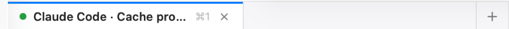

Getting started
Install Scope, declare your first scope and open a thread. Five minutes, no configuration file to write.
Requirements
- macOS 15 or later, Apple silicon or Intel.
- The agent CLIs you intend to use, on your login shell's
PATH—claude,codex,cursor-agent. A plain shell always works. git.ghonly if you want the pull request panel.
Install
Download Scope-X.Y.Z.dmg from the latest release and drag
Scope into /Applications.
Ad-hoc signed builds. Until the project ships with a Developer ID certificate,
Gatekeeper refuses the first launch. Right-click the app → Open, or run
xattr -d com.apple.quarantine /Applications/Scope.app once.
Later versions install themselves: Scope checks a signed Sparkle appcast and offers the update in place (Scope → Check for Updates…).
From source
git clone https://github.com/maastrich/scope.git && cd scope
brew install xcodegen
xcodebuild -downloadComponent MetalToolchain # SwiftTerm ships a Metal shader
make run # build + open the .appmake build leaves the app in DerivedData/Build/Products/Debug/. The app is
ad-hoc signed and not sandboxed — it forks PTYs and runs arbitrary binaries.
Declare your first scope
A scope is any folder you want Scope to look after. ⌘O, or File → Declare a Scope…, then pick one of:
- a folder holding several clones (a cloned GitHub org, your
~/Developer); - a single repository — Scope treats the scope itself as the repo;
- a monorepo — same thing, one repo, many packages.
Scope walks the folder up to the discovery depth (1 by default, 0–4) and lists what it found. Nothing is written inside your folders.
Open a thread
⌘T opens a thread in whatever is selected — the scope root, a repository, a task sandbox. The
default driver is the plain shell; the split button next to it picks another. The thread is a real terminal:
your shell, your prompt, your colours, plus a handful of SCOPE_* variables so hooks can report
back.

Threads survive a restart: Scope keeps a record per thread and offers Relaunch — or Resume, when the driver captured a session id.
Create your first task
⇧⌘T. Describe the work in a sentence, pick the repositories it touches, press Continue. The driver proposes a branch that matches the conventions already in the repo; Create makes one worktree per repository and opens the first thread with your prompt already sent.

From there, Delta shows what the agent changed, and Commit… → Push → Create PR finishes the job.